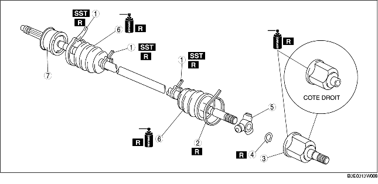

1. Démonter selon l'ordre indiqué dans le tableau.
2. Remonter dans l'ordre inverse du démontage.

.
|
1
|
Collier de soufflet (côté roue, côté boîte-pont : petit diamètre)
(voir la section Note sur le démontage de collier de soufflet (côté roue, côté boîte-pont : diamètre plus petit).)
|
|
2
|
Collier de soufflet (côté diamètre plus large de boîte-pont)
(voir la section Note sur le démontage de collier de soufflet (côté diamètre plus large de boîte-pont).)
|
|
3
|
Bague extérieure
(voir la section Note sur le démontage de bague extérieure)
(voir la section Note sur le remontage de bague extérieure)
|
|
4
|
Jonc d'arrêt
(voir la section Note sur le démontage d jonc d'arrêt, joint tripode.)
(voir la section Note sur le remontage de jonc d'arrêt, joint tripode.)
|
|
5
|
Joint tripode
(voir la section Note sur le démontage d jonc d'arrêt, joint tripode.)
(voir la section Note sur le remontage de jonc d'arrêt, joint tripode.)
|
|
6
|
Soufflet
(voir la section Note sur le démontage de soufflet.)
(voir la section Note sur le remontage de soufflet.)
|
|
7
|
Composant d'arbre et de joint à rotule
|
1. Retirer le collier de soufflet à l'aide des pinces à collier.
1. Faire levier sur la collier de soufflet aux points indiqués dans l'illustration à l'aide de pinces, et dépose le collier.
1. Marquer un repère d'alignement sur l'arbre de transmission et la bague extérieure.
2. Déposer la bague extérieure.
1. Placer une marque d'alignement sur l'arbre et le joint tripode.
2. Déposer le jonc d'arrêt à l'aide de pinces à jonc d'arrêt appropriées.
3. Déposer le joint tripode de l'arbre.
1. Entourer les cannelures de l'arbre avec de la bande adhésive.
2. Déposer le soufflet.
1. Enduire de graisse l'intérieur du soufflet pare-poussière (côté roue) neuf.
2. Installer le pare-poussière avec les cannelures de l'arbre toujours enveloppées de bande adhésive.
3. Déposer la bande de vinyle.
1. Tout en ajustant les repères d'alignement de l'arbre et du joint tripode, insérer le joint tripode à l'aide d'une barre et d'un marteau.
2. Insérer un nouveau jonc d'arrêt à l'aide de pinces à jonc d'arrêt.
1. Faire l'appoint en graisse spécifiée de la bague extérieure et du soufflet (côté boîte-pont).
2. Remonter la bague extérieure.
3. Régler l'arbre de transmission à la longueur standard.
4. Evacuer tout l'air contenu dans les soufflets en soulevant soigneusement la petite extrémité de chaque soufflet avec un tournevis enveloppé d'un chiffon.
5. Vérifier que la longueur de l'arbre de transmission est conforme aux spécifications dans les conditions de pression atmosphériques à l'intérieur du soufflet.
1. Faire levier sur la collier de soufflet aux points indiqués dans l'illustration à l'aide de pinces, et serrer le collier de soufflet.
1. Régler la largeur d'ouverture A en tournant le boulon de réglage de l'outil SST.
2. Sertir le petit collier de soufflet côté roue en position complètement fermée de façon à ce qu'aucun espace ne subsiste, à l'aide l'outil SST.
3. Vérifier que le collier de soufflet ne dépasse pas de la zone de repose du collier de soufflet.
4. Remplir le soufflet de graisse provenant du kit de réparation.
5. Régler la largeur d'ouverture A de l'outil SST conformément aux spécifications.
6. Sertir le grand collier de soufflet côté roue en position complètement fermée de façon à ce qu'aucun espace ne subsiste, à l'aide l'outil SST.
7. Vérifier que le collier de soufflet ne dépasse pas de la zone de repose du collier de soufflet.